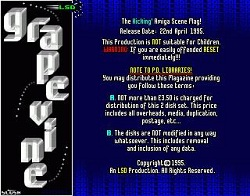
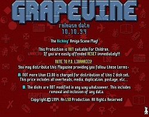
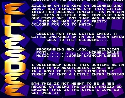
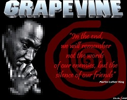
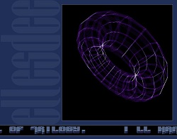
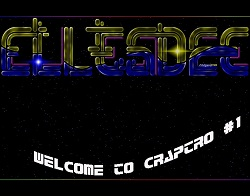

Interview with Obvious Disaster

FuZioN: Hi ObviousDisaster, please introduce yourself.
OD: I'm a lazy coder, creator of crap graphics and designer.
For my normal boring tedious day job, I'm a software engineer (sounds a little more pretentious than programmer), web developer and system administrator.
FuZioN: How and when did you initially get into the Amiga demoscene?
OD: Must have been 1987/88 when I saw an advert by 17-bit PD library for a starter pack. It was a three or five disk pack and it had the Boing and Juggler animations which impressed the hell of out of me. But it was the disk that had the demos that really made an impression. I remember a Sunriders intro with the scrolling chequered floors and a sine scroller, but then I saw the D.O.C Demons are Forever demo. That's what got me interested.
I'd only had the Amiga for a few months and I'd mastered AmigaBasic (remember how shit that was?) I got a few more PD disks with Seka on it and bought the Hardware Reference Manual which was next to fucking useless, but I got there slowly. I graduated to DevPac which I bought with my birthday money, and then eventually to Asm-One. I think I used Argasm as well, but don't remember much other than it being incredibly fast.
What turned coding from just an interest into obsession was the Red Sector Inc Megademo. That was it for me, so I worked like a demon copying the effects in that demo.
I went to a 16-bit show at the Novatel where I met Anarchy, Slipstream and Share and Enjoy. They were at the foot of the stairs right opposite the bar with an Amiga 500 with four floppy disks and X-copy copying off demos. I remember seeing Horizon's Sleeping Bag demo running on another there. Another memory is seeing SAE's Amazing Tunes 2 all over the fucking place.
The reason I didn't get that involved in the scene was some of them were right arrogant fuckers (especially group organisers), and I didn't want to be around them.
I knew a coder with the Mighty Druids (whose name escapes me now), Dan of Anarchy when he was just getting into coding, Kreator of Anarchy and Comrade J/SAE. I knew Kreator because I was a great customer of NBS PD library on the Isle of Wight, and they wanted to do a monthly magazine and they said Kreator/Anarchy had done some code but he was too busy with his studies to finish it off, so I was sent it. Not sure if they used it though.
I was in a couple of groups, but never produced anything. It's a bad habit I still have now, that when the hard work is done on something, I move on and can't be arsed with the easy stuff. So doing logos for LSD's Grapevine and a few articles was as close as I got.
FuZioN: What scene groups were you a member of?
OD: Delta 9, Iris UK (which I didn't know until my mate told me I'd been kicked out) and Cybertek.
FuZioN: What handles/nicks did you previously use?
OD: Slush/Cybertek, Zildjian and Khephren on IRC.
FuZioN: What are your fondest memories of the Amiga scene?
OD: I have three memories that are surprisingly clear in my head.
The first is seeing Scoopex Mental Hangover for the first time. Woah! This was a game changer. No more megademos, just great graphics and music and much easier to code.
The second is incredibly geeky, but writing MY first vector routine. Just seeing a cube rotating on the screen without copying or resourcing someone else's really gave me a thrill.
The third needs a little back story. TEC/Cryptoburners released his line source code from Seka, and it was lightning fast, it was THE code to beat. It took me months but eventually I made one that was faster than his, thanks to someone my brother put in touch with who was a maths wizard. That was my greatest achievement.
Tragic waste.
FuZioN: Name some of your favourite Amiga demoscene productions/groups
OD: Top demos? Oh I have too many.
Kefrens Desert Dreams. Demo perfection for me. [Agreed! - fZn]
Virtual Dreams Love. Loved Skull's style and demos, and Jogier's music is brilliant on this
Phenomena Enigma. For the music.
Anarchy Seeing is Believing. The music is brilliant and design.
And lastly, anything by Melon Dezign. They were a breath of fresh air, with the wild design.

FuZioN: Are you still in contact with any ex-scene buddies or contacts?
OD: Nah. Left it all behind now.
FuZioN: Do you still run any Amiga's or use emulation in any way?
OD: No, I threw my Amiga away a long time ago now. I used to run WinUAE but lost all my stuff in a hard disk crash. I don't miss it that much. I have MP3's of the music that I run off Google Music, that's as far as my nostalgia goes now.
FuZioN: What were your favourite productions that you worked on during the main years of the scene?
OD: We didn't release anything, ha! Well ok, there was a crap game of Tetris called Cybertris, but that was just me proving a point to a mate of mine that coding Tetris was a piece of piss, I think there might have been a bet involved but I don't remember fully.
I remember going to High Wycombe for a weekend and me and the other coder in the group started coding a demo. 1994 was a bad year for disasters, and we were going to code a demo we called Sickness. I remember I quickly drew a vector of a ferry as the Estonia ferry had just sank, and then we added vector lifejackets and lifeboats spelling out Cybertek. I think that's as far as we got before we were too pissed and stoned to carry on.
Same with the JetPac AGA which I had drawn the graphics for. We didn't get past the title page and credits for the same reasons above. Why we decided on doing the graphics in med-res is still a mystery to me.
I do remember seeing an intro with a light sourced vector face, not sure if I had anything to do with it other than the logo. It wasn't released as far as I know as we were disabled by having a musician who was crap.
FuZioN: Are you currently working on any projects when time restraints allow?
OD: I don't have a problem coming up with ideas and designs at the moment, and I've got bit and pieces of code I'm messing around with, it's just a struggle to complete a project. I blame it on me hitting my 40's.
FuZioN: Do you follow the PC demoscene at all?
OD: Nah, as far as I can tell from what I've seen it's all 3D shite, no interest in that. I like old school effects.
FuZioN: Have you ever attended any scene parties?
OD: Not that I can remember.
FuZioN: Were you active in the BBS scene and manage to run up mammoth phone bills?
OD: Yeah I was on Digital Candy and Mostly Harmless a lot, and regularly run up bills of a £1,000.
FuZioN: Are there moments when you feel nostalgic, thinking back to the best years of the Amiga scene?
OD: I have moments when I miss the competition between coders to come up with the best effect the fastest.
A few weeks ago someone posted a PDF of the original manual for ASM-One. That made me want to install WinUAE again and then have a play, but then I found I can't remember 680x0 code anymore. That pissed me off alot, but probably for the best or I'd end up buying another Amiga 4000 that would sit there doing fuck all for years.
FuZioN: How do you relax/unwind/chill the hell out?
OD: With lots of medication :)
FuZioN: What music are you into?
OD: Same as always, 60's and 70's along with a load of Amiga demo tunes I've MP3'ed up.
FuZioN: This is your SPAM area.. feel free to advertise any web presence, be it Fbook/Twatter/URL/other.
OD: I'm on Facebook, Twitter and all that social bollocks, but I'm anti-social... so no :)
FuZioN: Thanks for taking part in the interview mate. Any final words of wisdom?
OD: Wisdom. From me? How well do you know me mate :)